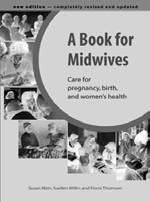
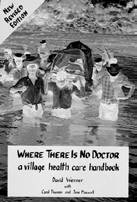
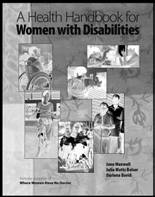
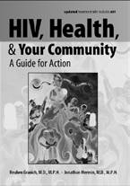

indeX
A how baby teeth grow and stay strong, 63 knocked out: diagnosis and treatment, 97
Abscess, 93, 217 loose, 54 and gum bubble, 74 make space in mouth for permanent teeth, 64 begins with a cavity, 6, 47 marks on baby teeth, 62 diagnosis and treatment, 93 why baby teeth are important, 64 flip chart presentation, 30-31
Bacteria (See Germs)
treat at once before infection reaches the
Bandage, head, for a broken jaw, 110 bone, 6
Berry juice treat pregnant women, now, 15-16 used to show coating of germs on teeth, 53
Acetaminophen (paracetamol)
Bicycle-powered dental drill, 151 dental kit supply, 202
Bleeding dose for pain, 94-95 and extractions, 77, 153-154
Acid from socket: diagnosis and treatment, 118 causes tooth decay and gum disease, 7, 50, how to place a suture, 161-162 in the mouth: possible causes (chart), 116 some sugars make acid more easily, 55
Bleach, for disinfecting without heat, 89
Adrenaline (epinephrine), 136, 137, 203
Blood
AIDS, Chapter 12, 169 boil any instrument that has touched blood,
(See HIV/AIDS)
Alcohol, for disinfecting without heat, 89
(Also see Bleeding)
Allergies to medicines
Blood pressure, 77, 118 and extractions, 153-154
Blood vessel, 46 penicillin warning, 203
Bone
Amoxicillin, 94,182,184,187 bone chips inside tooth socket, 166
Ampicillin, 94, 105 broken: diagnosis and treatment, 108-112
Anemia, 16, 105, 123, 217 damage from gum disease, 42
Anesthetics, local, 135-142 three main bones in the face, 108 dental kit supply, 205
Bones of animals, 41
Antibiotics, 94, 217
Books on dental care, 215-216 dental kit supply, 202, 204
Bottle feeding, 3, 63 doses for tooth abscesses and other
Breast feeding, good for teeth, 3 problems, 94
Broken bone, 108-112 injections, 203-204
Broken root, 165 precautions, 203
Broken tooth, 96 sulfadimidine, 123
Brushing teeth (See Cleaning teeth)
warning on tetracycline, 63
Brushstick (homemade toothbrush), 4
Anti-retrovirals (ARVs), 171, 188
Bubble (See Gum bubble)
Arkansas stone, 128
Aspirating syringe, 136, 207, 217
Aspirin, 94 correct dose for pain, 94-95, 203 dental kit supply, 202
Cancer, 125, 218 do not hold against teeth, 203 can begin with white lines inside mouth, 105
Atraumatic Restorative Treatment, 92, 144, 151 diagnosis, 125
Kaposi’s Sarcoma, 188 look for a sore that does not heal, 106
B
Candy, 9
(Also see Sweet foods)
Baby teeth, 62-65
Cancrum oris (noma)
ages when baby teeth come in, 43, 64 diagnosis and treatment, 121-124, 185
Begin forming before birth, 62
Canker sores, diagnosis and treatment, 106 do not cause diarrhea and fever, 65 index c-d-e
Cartridges of injectable anesthetic, 135-136,
Clotrimazole, 181
Coating of germs on the teeth, 50
Cavities (caries), 218
Cola drink, in experiment on decay, 48 can begin as marks on baby teeth, 62
Cold sores (fever blisters)
can become abscesses, 47 diagnosis and treatment, 104, 186-187 can make teeth hurt, 46
'Colonies’ of germs on the teeth, 50, 218 caused sometimes by baby bottles, 3
Comparative diagnosis (telling similar problems diagnosis and treatment, 92Cavities apart), 80-83
(continued)
Cotrimoxazole, 178 fill cavities before abscess forms, 6
Cotton rolls, 146, 205 flip chart presentation, 30-31
'Cowhorn’ forceps, 155 on neck of tooth, 92, 205 do not use on baby teeth, 160 puppet show about, 33-34
Curette (for scaling teeth), 128 school survey, 49
Cement fillings (See Fillings)
Chair for examinations and extractions, 75, 156
Cheek bone, 108
Demonstration, 26, 48
CHILD-to-child program, 24
Dental floss, 71-72, 210
Children
Dental kit, supplies for, 201-211 as health workers, 24
Dental mirror, 75, 209 can clean their own teeth, 58
Dental tools (See Instruments)
cannot learn well if their teeth hurt, 20
Dental workers, can visit schools, 35 want to learn, 19
Dentures, 163-164 young children should not take aspirin, 94, 203 bad dentures cause sore mouth, 107
Chlorhexidine gluconate, 179, 181 sores under, diagnosis and treatment, 106
Cleaning instruments, 75, 87-91
Diabetes after extractions, 167 and extractions, 153-154 after filling a tooth, 150 and thrush, 105 after scaling, 134
Diagnosis (See Examination and diagnosis)
disinfecting without heat, 89
Diagnosis charts, 80-83 how to sterilize syringes, 138 loose tooth, 81 pressure cooker, 88 sore mouth, 82 sterilizing with steam, 87-88 sores 82-83 wash your hands, too, 86 swelling, 81
Cleaning teeth, 56, 69-72 toothache, 80 can help sore gums, 7 trouble opening or closing mouth, 83
CHILD-to-child activities, 24, 53
(Also see Comparative diagnosis)
especially important for persons who take
Diet (See Nutrition)
certain medicines, 115
Dilantin (diphenylhydantoin), 115 experiment to find the best way, 58
Dislocated jaw flip chart presentation, 31 after extraction, 167 how to clean a baby’s teeth, 63 diagnosis and treatment, 113 how to clean between teeth, 71-72
Disinfectant, cold how to make a brushstick, 4 for cleaning certain instruments, 89, 206 how to make a child’s toothbrush, 63
Doxycycline, 77, 182, 184, 187 how to make waxed floss, 210
Drama, for teaching about tooth problems, 26 make it part of a daily school activity, 59
Drawing pictures, 31 parents should clean children’s teeth, 11,
Drill, dental, 151-152
18, 63
Dry socket, diagnosis and treatment, 117 pregnant women must take special care,16
'protected areas’ that are hard to clean, 4 soft toothbrush is best, 4, 70
E
(Also see Gum disease, Scaling teeth)
Clindamycin, 123, 185
Elevators for extractions, 155-156, 207 how to use, 158 index e-F-G-H
Epilepsy
Fish bone and swollen gums: diagnosis and treatment, 115 can get caught under gums, 133
Epinephrine (adrenaline), 136, 203
Flannel-boards, 28, 218
Epulis, 133
Flesh, left inside socket after extraction, 166
Erythromycin, 94, 182, 184, 185, 187
Flip charts, 29-31, 218 dental kit supply, 202-203 example, 30-31
Eugenol (oil of cloves), 145, 205
Flossing (cleaning between teeth), 71-72, 210,
Examination and diagnosis, Chapter 6, 218 bleeding in the mouth (chart), 116
Fluconazole, 181 different problems come at different ages, 78
Fluoride, 24, 70, 218 examining inside the mouth, 79 on neck of tooth, 92, 205 four steps to a good diagnosis, 76 rinse and paste to prevent cavities, 205 and HIV, 174-176
Food (See Nutrition)
how to check the gums, 74
Forceps for extractions, 155, 207 look for sores, 74
Fracture (See Broken bone, tooth, root)
questions that help you make a diagnosis, 73, 76 telling similar problems apart, 80-83 tetanus, 118
G touch the sore place, 79 wear protective equipment, 174
Game ('Scatter!’), 50-51 where to examine, 75
Generic name, 202
Gentian violet, 105, 179, 181, 202
(Also see Diagnosis charts)
Excavator, 145
Germs, 219
Expiration date, 218 discussion about, 51
Extractions, Chapter 11 health workers must not spread germs, before you begin—ask questions! 153
85-87 four problems to watch for, 154 impossible to kill all germs in mouth, 50 how to take out a tooth, 157-163 where they hide, 87 instructions: what to do afterward, 163-167
Gingivae, gingivitis (See Gums, Gum disease)
instruments needed, 154-156
Gloves, 86, 174, 200 for people with HIV, 177
'Go foods’ (energy foods), 67-68 pregnant women need not wait, 15-16, 77 warning about, 68 problems afterward, 116-117, 165-167
Grooves on teeth, 92, 205, 219 three reasons to take out a tooth, 153
Gum boil (See Gum bubble)
Gum bubble, 47, 74
Gum disease, 52-53
F description, 42, 52 diagnosis and treatment, 101-103
False teeth, 163-164 flip chart presentation, 30-31
(Also see Dentures)
home care for, 53
Fever blisters, how gum disease makes teeth fall out, 42 diagnosis and treatment, 104, 186-187 learning activity about, 53
Filing teeth to correct a bad bite, 99 noma: diagnosis and treatment, 121-124
Filling tool, 145 picture of, 7
Fillings, Chapter 10 possible cause of a sore mouth, 82 filling material, 145, 205 prevent gum disease during pregnancy, 16 how to place, 146-150 serious gum disease: diagnosis and instructions for after you place a filling, 150 treatment, 8, 102-103, 121-124 instruments needed, 145
Gum pocket, 52, 131, 219 lost or broken: diagnosis and treatment, 92
Gums permanent fillings, 151-152 definition, 219 puppet show about, 33-34 importance of, 1, 37 two kinds, 144 infected gums (noma): diagnosis and what a filling can do, 144 treatment, 121-124 when not to place a filling, 143 healthy and unhealthy gums: description, 52 when to place a filling, 144 how to examine, 74 index H-i-J-K-L-M swollen gums and epilepsy medicine, 115 for examination, 75 swollen gums and pregnancy, 16, 77, 102 for extractions, 155-158 why gums can feel sore, 7, 52 for filling teeth, 145 for scaling, 128 making your own instruments, 208-210
H
(Also see Cleaning instruments)
Iodine Solution, 103, 123, 179, 182
Hands
I.R.M. (Intermediate Restorative Material), 145 wash before you touch someone’s mouth, 86
Head bandage for a broken jaw, 110
Heart disease, and extractions, 153-154
J
Heat, can lower swelling, 94
Hemorrhage, and extractions, 153-154
Jamaica
Hemostat, 161 dental workers’ description of gum disease,
Herpes virus, can cause fever blisters, 104,
186-187
Jaw bone, 41
HIV, Chapter 12, 169 broken: diagnosis and treatment, 108-112 common problems, 178 dislocated: after an extraction, 167 definition, 171 dislocated: diagnosis and treatment, 113 dental care, 177 three main bones in face, 108 and food, 189
Joint, 219 how it spreads, 172 pain in: diagnosis and treatment, 114 general treatments, 178-179 prevention, 191-195
Hydrogen peroxide, 8, 179
K warning: do not use too much, 8
Hygiene (keeping clean), 82-85, 86-90, 178-179
Kaposi’s Sarcoma, 188
Ketoconazole, 181
Incisors, 39
Infection, 219
Learning (See Teaching)
can pass from tooth to bone, 47
Lidocaine (lignocaine), 136 dental workers can infect others, 85 dental kit supply, 205 description of infected gums, 52
Ligature wire, 110, 219 during pregnancy, 15-16, 77, 96, 148
Loose teeth, 54 in sinus: diagnosis and treatment, 95 diagnosis and treatment, 99 in spit gland: diagnosis and treatment, 119 possible causes (charts), 81, 99
Injections, Chapter 9, 204, 219 how to give injections to children, 141 injections of antibiotics, 204 instructions for after you give an injection, 142
Main food, 67-68 safe disposal, 199
Malaria, can contribute to noma, 121 sterilization of syringes, 138
Malnutrition, 219 two types of syringe, 135-136 cavities can help cause, 62 use an aspirating syringe, 138 often made worse by Vincent’s Infection, 102
Instructions
(Also see Nutrition)
what to do after extracting, 163-167
Mango string, can get caught under gums, 133 what to do after injecting, 142
Measles what to do after placing a temporary can cause dry, sore lips, 107 filling, 150 can contribute to noma, 121 what to do after scaling, 133
Medicines in dental kit, 201-204
Instruments, 207-211, 219
Mepivacaine, 137 boil any instrument that has touched blood, 87
Metronidazole,123, 184, 185 buying instruments, 211
Index N-O-P-R-S
Milk-oil drink
P for persons who cannot eat properly, 111
Mirror, 75, 209
Pain
Molars, 39, 43, 219 aspirin or acetaminophen can help, 94 ages when molars grow in, 43 mouth and throat, 189 baby molars, 64
Patches (red or purple) in the mouth, 188 first permanent molar is often the first
Penicillin, 93-94, 202-204 permanent tooth, 64 almost always taken by mouth, 93 infection in new molar: diagnosis and dental kit supply, 202 treatment, 100 dose taken by mouth, 94, 202 new molar can cause face to swell, 66 injectable, 204 often grow in badly, 43 precautions, 203 taking care of, 66 take entire dose, 93, 203
Mouth
Permanent teeth, 43, 54, 220 dry or painful, 189 knocked out: diagnosis and treatment, 97 trouble opening and closing (chart), 83 need good baby teeth before them, 64 white lines inside the mouth can be
Phenytoin (See Dilantin)
cancer, 105
Pictures
Mouth wash, 103, 177-179, 181 as a teaching aid, 28, 37-38 tracing, 31
Plaque, 50, 220
N disclosing solution (berry juice), 53
Plays, 26
Neck of a tooth, grooves in, 92
Posters, 28
Needle, hypodermic
Povidone iodine, 103, 123, 179, 182 disposable, for oral anesthetic, 205
Pregnancy, 15-16 safe disposal, 199-200 and dental problems, 15-16, 77, 102, 154 used to wire a broken jaw, 112 women must take special care, 101
Nerve of a tooth, 46, 220 story about, 15-16 main trunks and small branches, 136-137
Pressure cooker for sterilizing instruments, 88
Noma (cancrum oris)
Prevention, 35, Chapter 5, 220 diagnosis and treatment, 121-124, 185 early treatment is a form of prevention, 61 prevention, 124 foods that are good and bad, 55
Nutrition, 67-68, 220
HIV, 191-195
eat a mixture of foods, 11, 67-68
(Also see Cleaning teeth, Nutrition)
eat enough food, 67
Probe, 75, 209 flip chart presentation, 30-31
Pronunciation, why teeth are important for, 37 foods for persons who cannot eat properly,
Puppet shows, 32-34
111, 189 example, 33-34 foods that make gums stronger, 7, 8
Puzzles, 27 foods that we cannot eat without teeth, 38 good and bad foods, 55 good and bad sweets, 3
R grow foods in your own garden, 11 and HIV, 189
Records, 212, 220 pregnant women need Vitamin C, 16
Reports, 213, 220 tooth pain can interfere with nutrition, 62
Rinsing the mouth
Nystatin, 105, 107, 181, 202 during pregnancy, 16 with hydrogen peroxide, 8, 179 with salt water, 7, 178
O various rinses, 178-179
Root of the tooth, 41
Oil broken: diagnosis and treatment, 165 prevents rust when sterilizing instruments, 87 count roots before taking out a tooth, 159
Oil of cloves, 145 has a nerve and blood vessel, 46
Index S-T pushed into sinus, 166
Sterilization, 87-89, 211
Root fibers, 41, 220 with steam, 88
Story telling, 15, 26 about pregnancy and dental care, 15-16
S
Sugar some kinds make acid more easily, 55
Safe disposal of dental waste, 199-200 sugar cane is not as bad as candy, 9
Safer sex, 191-192
(Also see Sweet foods)
Salivary gland (spit gland)
infection in: diagnosis and treatment, 119
Sulfadimidine, 123
Salt water rinse, 7, 178
Surveys, 214, 221
Scalers, 128 as a way of learning numbers, 24, 25
Scaling teeth, Chapter 8 counting cavities, 49, 214 instruction for after you scale teeth, 133-134 counting teeth, 44-45 instruments for, 128, 207 to find the best way to clean teeth, 58 only scale teeth of someone who will keep
Sutures, 161-162 teeth clean, 127
Sweet foods, 9, 46, 55
'Scatter!’ (game), 50-51 avoid fizzy drinks, 11
School can cause cavities and gum disease, 6-7 cleaning teeth can be a daily health activity, learning activities, 48
59-60, 205 some are called 'go foods’, 67-68 school lunch program, 57
Swelling
(Also see Teaching)
and epilepsy medicine, 115
Scientific method for making diagnosis, 76 and pregnancy, 102
Sewing up a wound (suturing), 161-163 after extractions, 116, 166
Sharpening stone, 128 different problems come at different ages, 78
Shots (See Injections)
from a tooth abscess, 6, 47
Sinus heat can lower swelling, 94 infected, diagnosis and treatment, 95 may be a new molar coming in, 66 root pushed into sinus, 166 possible causes (chart), 81
Slides for teaching about dental health, 215
Syringes
Socket, 220 aspirating, 136, 207 broken root inside, 165 for injections: two kinds, 135-136 painful (dry socket): diagnosis and
(Also see Injections)
treatment, 117 painful, 167
T
Soreness in mouth, possible causes (chart), 82
Sores
Tartar, 52, 221 around the mouth, 107 can be a sign of gum disease, 79 at corners of mouth: diagnosis and how to scale, 129 treatment, 107 makes gums sore, 8 different problems come at different ages, 78
Teachers from a denture: diagnosis and treatment, 106 can teach without dental worker’s help, 36 on the face, 120
Teaching on lips, cheek, and tongue, 74, 182
'association of ideas’, 14 types of face sores (chart), 83 by example, 57, 193-194 types of mouth sores (chart), 82, 182 community can be part of classroom, 25
Spatula, for cement fillings, 145 each person can teach another, 12
Spit gland finding the best way to teach, 13-18 infection in: diagnosis and treatment, 119 finding the best place to teach, 17
Spoon learn from the people, 13 for extractions, 155 let students discover for themselves, 20, 24 for fillings, 145 repetition helps people remember, 17 making your own, 210 teach yourself before teaching others, 2, 195 teaching family and friends, Chapter 2
Index T-V-W-X-Z teaching school children, Chapters 3, 4 tooth knocked out: diagnosis and treatment teaching so that learning can happen, 20-24
97-98 with demonstrations, 26
Toothpaste, 5, 69 with drama, 26
Tracing pictures, 31 with posters and pictures, 28
Traditional beliefs, 10, 13, 221 with puzzles, 27 about pregnancy, 15 with story telling, 15-16, 169-170 building new traditions from old ones 14
(Also see School)
Treadle-powered dental drill, 151
Teeth
Treatment, Chapter 7 and gums, 1 can be given during pregnancy, 15-16, 77, broken, 96
102, 154 four problems to watch for, 73 early treatment prevents serious problems, 2 how many teeth we should have, 43
Trench mouth:
importance of, 1, 37 diagnosis and treatment, 102, 183 injuries to: diagnosis and treatment, 96-98
Tumor, diagnosis and treatment, 125 learning about anatomy, 49
Tweezers, how to make, 209 loose: diagnosis and treatment, 54, 99 naming teeth with numbers, 212 new tooth coming in:
diagnosis and treatment, 100, 101 rotting in cola drink (experiment), 48
Vegetable soup (special drink)
what holds teeth, 41 for those who cannot eat properly, 111 what makes teeth hurt, 46
Vincent’s Infection of the gums why some teeth look different, 39 can worsen and become noma, 121-124
(Also see Baby teeth, Loose teeth)
diagnosis and treatment, 102-103, 183-184
Teeth, false, 163-164
Vitamin C, 16, 103, 124
(Also see Dentures)
Teeth, taking out, Chapter 11
W
(Also see Extractions)
Teething: diagnosis and treatment, 101
Wax, to replace a knocked-out tooth, 98
Tension
Wire ligature, 110 can cause pain in joint, 114-115
Wisdom teeth (3rd Molars) (See Molars)
Tetanus diagnosis, 118
Tetracycline, can hurt baby teeth, 63, 77, 202
Theater, 26
Thrush: diagnosis and treatment, 105, 180-181
X-rays
Tongue blade (tongue depressor), 75, 206 for knocked-out teeth, 98
Tools (See Instruments)
to look at new tooth growing in, 100
Tooth (See Teeth)
warning about pregnant women, 77
Tooth abscess (See Abscess)
Toothache
Z possible causes (chart), 80 why teeth hurt, 46
Zinc, 103
(Also see Abscess)
Zinc oxide, 145, 205
Toothbrushes how to make your own, 4-5, 23 how to make a brush smaller for a child, 63 soft is best, 4
Tooth decay can touch nerve and cause an abscess, 6 flip chart presentation, 30
(Also see Cavities)
Tooth injuries broken tooth: diagnosis and treatment, 96





Other Books from Hesperian
Where Women Have no doctor, by a. august Burns, Ronnie
Lovich, Jane Maxwell, and Katharine Shapiro, combines self-help medical information with an understanding of how poverty, discrimination and culture can limit women’s health and access to care. This book is essential for any woman who wants to improve her health, and for health workers who want more information about the problems that affect only women or that affect women differently from men. 588 pages.
a Book for Midwives, by Susan Klein, Suellen Miller, and
Fiona Thomson, revised in 2004, is for midwives, community health workers and anyone concerned about the health of women and babies in pregnancy, birth and beyond. It includes:
helping pregnant women stay healthy, care during and after birth, handling obstetric complications, breastfeeding, and expanded information for women’s reproductive health care.
544 pages.
Where There is no doctor, by David Werner with Carol
Thuman and Jane Maxwell. perhaps the most widely used health care manual in the world, this book provides vital, easily understood information on how to diagnose, treat, and prevent common diseases. Emphasis is placed on prevention, including cleanliness, diet, and vaccinations, as well as the active role people must take in their own health care. 512 pages.
a Health Handbook for Women with disabilities, by Jane
Maxwell, Julia Watts Belser, and Darlena David. Women with disabilities often discover that the social stigma of disability and inadequate care are greater barriers to health than the disabilities themselves. This groundbreaking handbook provides suggestions on daily care, family planning, violence and abuse, pregnancy and childbirth, drug interactions, and more. 384 pages.
Helping Health Workers Learn, by David Werner and Bill Bower.
an indispensable resource for teaching about health, this heavily illustrated book presents strategies for effective community involvement through participatory education. Includes activities for mothers and children; pointers for using theater, flannel-boards, and other techniques; and ideas for producing low-cost teaching aids.
640 pages.




HiV, Health, and Your community, by Reuben Granich and
Jonathan Mermin, is designed for places with few medical resources, and accessible to people without technical knowledge or prior training in HIV prevention or in the care of people with
HIV. Topics include: biology of HIV, prevention strategies, counseling and testing, low-cost care, and guidelines for using aRT and treating opportunistic infections. 248 pages.
Helping children Who are Blind, by Sandy Niemann and Namita
Jacob, aids parents and other caregivers in helping blind children develop all their capabilities. Topics include: assessing what a child can see, preventing blindness, moving around safely, teaching common activities, and more. 192 pages.
Helping children Who are deaf, by Sandy Neimann, Devorah
Greenstein and Darlena David, helps parents and other caregivers build the communication skills of young children who do not hear well. Covers language development through both signed and spoken methods, assessing hearing loss, exploring causes of deafness, and more. 250 pages.
disabled Village children, by David Werner, covers most common disabilities of children. It gives suggestions for rehabilitation and explains how to make a variety of low-cost aids. Emphasis is placed on how to help disabled children find a role and be accepted in the community. 672 pages.
a community Guide to environmental Health, by Jeff Conant and pam Fadem, helps urban and rural health promoters, activists, and others solve environmental problems to improve health. 23 chapters with dozens of activities and instructions provide information about reducing harm from pollution protecting water and watersheds, farming sustainably, solid and health care waste, and more. 600 pages.
To order books in English or Spanish, or to learn more about our work, contact:
Hesperian · pO Box 11577 · Berkeley, California, 94712-2577 · uSa tel: (1-510) 845-4507 · fax: (1-510) 845-0539 · email: bookorders@hesperian.org www.hesperian.org
Where There Is No Dentist and other Hesperian books have also been translated into many languages by groups and individuals around the world. please write to
Hesperian or visit our website at www.hesperian.org/publications_translations.php for information on how to order editions of Where There Is No Dentist in Bengali,
Burmese, Dari, English for africa, English for India, Farsi, French, Korean, Miskito,
Nepali, pashto, portuguese, Sindhi, Spanish, and Thai.
Document Outline
Title Page
Imprint Page
Thanks Page
Table of Contents
Introduction
Chapter 1: Your Own Gums
Chapter 2: Teaching Family and Friends in Your Community
Chapter 3: Teaching Children at School
Chapter 4: School Activities for Learning About Teeth and Gums
Chapter 5: Taking Care of Teeth and Gums
Chapter 6: Examination and Diagnosis
Chapter 7: Treating Some Common Problems
Chapter 8: Scaling Teeth
Chapter 9: Injecting Inside the Mouth
Chapter 10: Cement Fillings
Chapter 11: Taking Out Teeth
Chapter 12: HIV and Care of the Teeth and Gums
Appendices
Vocabulary
Index
Other Books from Hesperian